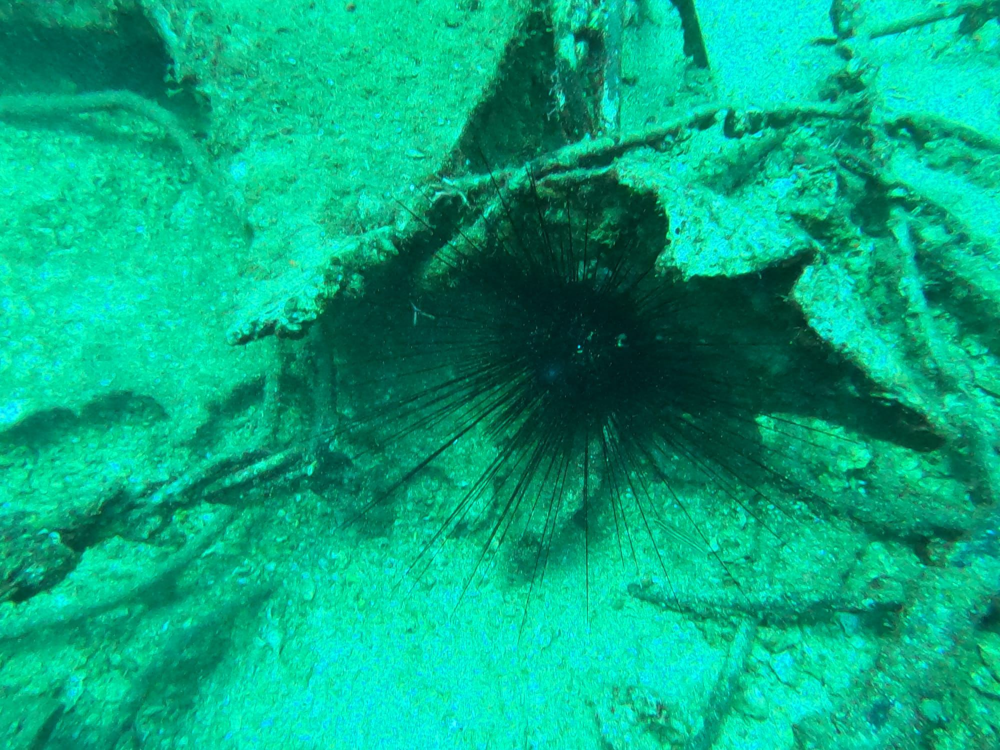

Incredible Creatures
Scuba From My Perspective
Fish✨
Bluetail Trunkfish
These adorable box-shaped fish have a unique rectangular body covered in hard scales that protect them like armor. They waddle through the water in the cutest way, almost like they're walking! Their bright blue tails really stand out against the coral reefs.

Yellowbar Angelfish
Beautiful angelfish with striking yellow bars running across their bodies. They're graceful swimmers and love hanging around coral reefs, feeding on algae and small invertebrates. Watch them glide through the water!
Other Creatures✨
Common Stingray
In places like Shavei Tzion, you’ll often spot the common stingray half-hidden between rocks, pretending nobody can see it. Its smooth gray body blends in perfectly — until it suddenly flaps away like a startled tortilla. Harmless unless bothered, it’s one of the coolest “surprise guests” you can meet underwater.

sea urchins
They may look like a tiny ocean jewel, but trust me, the Sea orchid has a mean side. I once stepped on one and yelped so loudly the whole beach probably heard—those spines are no joke and I swore I’d hate them forever. Still, even with that stingy first impression, there’s something irresistibly beautiful about the way it sits on the seafloor, all delicate and dramatic.
Scuba Tips for Champions 🦪
Essential tips I've learned from my diving adventures: